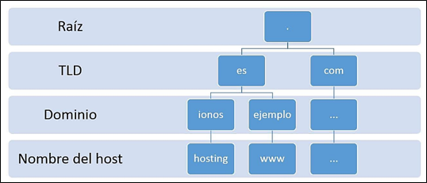

A web server is a software that is part of the server and its main mission is to return information (pages) when it receives petitions from users. For the correct functioning of a web server we
need a web client that makes a http or https request through a browser such as Chrome, Firefox or Safari and a server where the information is stored.
Types of WEB Servers:
1. Apache HTTP Server Apache is free and open source software, which for years has been the most widely used software by web servers, currently rivaling Nginx. It also stands out for being multiplatform ,
being compatible with operating systems such as Linux, Window, IOS, Unix, etc.
2. Nginx Server As with Apache, we would be facing a open source and multiplatform software compatible with Window, IOS, Linux, etc. It has a paid version in addition to the free one.
This type of web server is known for its good performance when it has to manage a high number of simultaneous visits , since users do not perceive a delay in loading the page even though that concurrent
access is occurring.
It is currently the most used web server software in the world.
3. LiteSpeed LiteSpeed was born as a replacement for Apache , to improve the performance of the web server in high traffic environments. Like Nginx, it has a free version and a paid
version. Currently performance tests do not indicate an improvement over Nginx.
4. Microsoft IIS Server This type of web server is developed by Microsof t and, in the event that Microsoft tools need to be integrated, it would be a recommended alternative due to the compatibility
we would obtain. It runs on Windows thanks to IIS (Internet Information Services) technology and is compatible with pages programmed in ASP (Active Server Pages) or .NET , unlike other web servers compatible
with Linux.
5. Sun Java System Web Server This type of server is intended for programmers who work with Java, Python or Ruby. It is a web server created to support a heavy workload with very
specific technologies such as Java.
Dynamic Host Configuration Protocol or dynamic host configuration protocol is an extension of the Bootstrap (BOOTP) protocol.
The boot protocol, known by the acronym BOOTP for Boot Strap Protocol, is a UDP network protocol used by network clients to obtain an IP address automatically.
DHCP was developed as a solution for large networks,
mobile computers and laptops and therefore complements BOOTP, among other things, for its ability to automatically assign reusable network addresses and by the existence of additional configuration possibilities.
The configuration parameters sent by the DHCP server are not valid for an indeterminate period of time, but for a "loan" time defined by the administrator known as concession or rental of addresses (lease time).
This indicates how long a device can access the network with that address. Before it expires (after half the time), clients have to request an extension of the lease by sending a new DHCPREQUEST. If it don't,
the DHCP refresh does not take place and the server releases it accordingly.
This network protocol is based on a client-server model. In this scenario,
a device (a laptop, mobile, etc.) requests, when connecting to a network, the IP configuration to a DHCP server through the ports UDP 67 and 68 (for IPv6 , ports 546 and 547 ), which for its part consults
in a database the addresses and assignable network parameters before giving an answer. Once the query is made, the server sends the following parameters to the client through the network:
-
Unique IP address - Subnet Mask - Standard Gateway -
DNS Servers - Configuration proxy by WPAD (Web Proxy Auto-Discovery Protocol)
The process of translating domain names into IP addresses is known as name resolution.
IP address: 93.184.216.34 Domain: www.example.es
 A DNS server, also known as a domain name system server or Domain Name System, consists
of software for servers that uses a DNS database to respond to requests that are related to the domain name space . As they are generally housed on dedicated hosts, the computers that host these programs
are also called that.
Every time a user registers a domain, a WHOIS entry is created in the corresponding registry and this is stored in DNS as a “resource record”. The database of a DNS server thus
becomes the compilation of all the records in the zone of the domain namespace that it manages.
The creation of the domain name system in 1983 replaced the earlier resolution procedure, which was very error-prone and based on a local hosts file. This hosts.txt file can still found today
on UNIX-based systems in the etc / directory and, on Windows computers, in % SystemRoot% \ system32 \ drivers \ etc.
The hosts.txt file required manual maintenance and regular updating, an effort impossible as the Internet grew exponentially. Today, this file is used exclusively for the classification of IP addresses in local networks. It also allows blocking web servers by automatically redirecting
their address to local hosting (local host).
On the other hand, a differentiation is usually made between primary and secondary DNS servers:
1. Primary, Main or Master Server: is a DNS server that stores the information about a certain zone of the domain namespace in its own database.
2. Secondary or Slave Server: when the information of a name server does not come from its own zone files, but is second or third-hand. This situation occurs when a server cannot resolve a request with its
own database and has to resort to the information available on another name server (recursive resolution). This DNS data is temporarily stored in local storage (caching) and are provided for future requests. Since the entries in the zone file itself may have changed in the meantime, information provided by secondary servers is not considered secure.